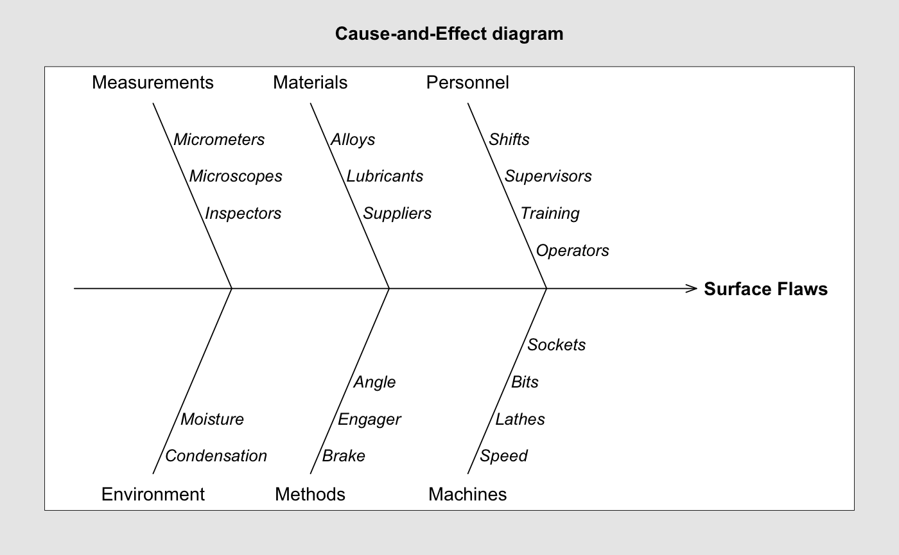

Draw a basic cause and effect diagram.
cause.and.effect(cause, effect, title = "Cause-and-Effect diagram", cex = c(1, 0.9, 1), font = c(1, 3, 2))
| cause | a list of causes and branches providing descriptive labels (see the example below). |
|---|---|
| effect | a string label or the effect. |
| title | a string specifying the main title to appear on the plot. |
| cex | a vector of values for the graphical character expansion. The values refer, in order, to branches, causes and effect. |
| font | a vector of values for the font to use. The values refer, in order, to branches, causes and effect. |
Montgomery, D.C. (2005) Introduction to Statistical Quality Control, 5th ed. New York: John Wiley & Sons.
Wetherill, G.B. and Brown, D.W. (1991) Statistical Process Control. New York: Chapman & Hall.
cause.and.effect(cause=list(Measurements=c("Micrometers", "Microscopes", "Inspectors"), Materials=c("Alloys", "Lubricants", "Suppliers"), Personnel=c("Shifts", "Supervisors", "Training", "Operators"), Environment=c("Condensation", "Moisture"), Methods=c("Brake", "Engager", "Angle"), Machines=c("Speed", "Lathes", "Bits", "Sockets")), effect="Surface Flaws")